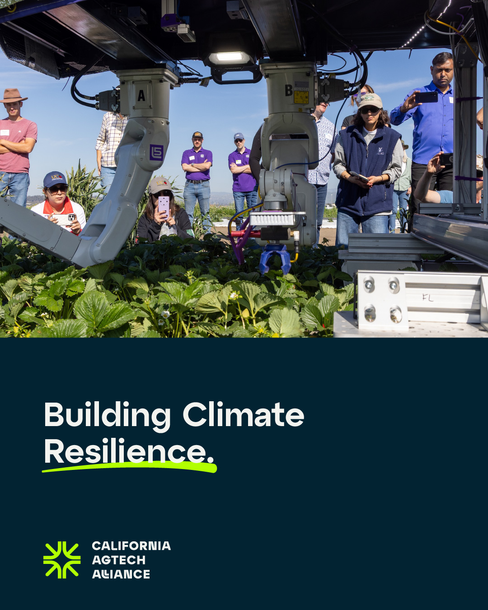

Partner briefing · 2026
Connecting California Food
for the Future.
Collaboration is California's advantage.A guiding line for the Alliance. California's AgTech ecosystem is coordinated and grounded in real agricultural needs. The Alliance is the entry point.

Climate-smart, region-aware
Building climate resilience.
Field-validated technologies, ready for adoption at scale — paired with a workforce that can actually run them. The Alliance closes the gap between innovation and adoption, region by region.
Scope at a glance
Nine regions, three pillars, one statewide platform.
9California regions in the network
3Integrated pillars: Workforce, Entrepreneurship, Network
8Partner projects in the statewide coalition
1Lead institution: UC Agriculture and Natural Resources
Where partnership starts
Find your place in the
statewide network.
Connect with the Alliance
calagtechalliance.org